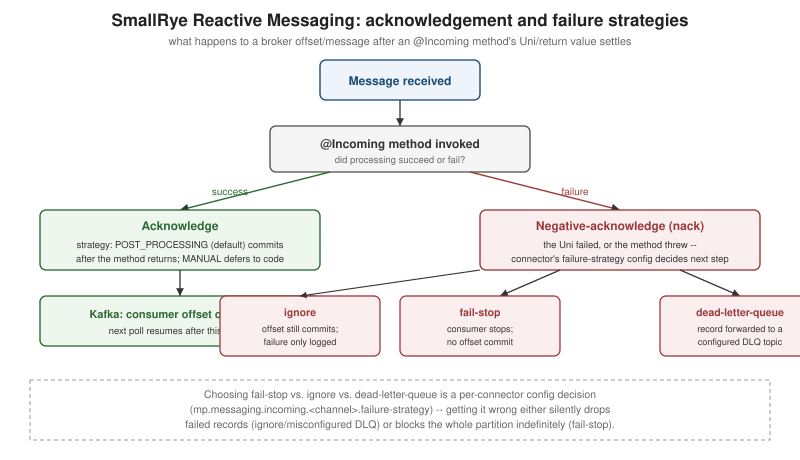

Messaging with SmallRye Reactive Messaging
|
This content was generated with the assistance of AI and should be verified against the official documentation before being relied on in production. |
Quarkus’s messaging support is built on
SmallRye Reactive Messaging, an implementation of the
Eclipse MicroProfile Reactive Messaging specification. Application code is written against a small, connector-
agnostic API — channels, @Incoming/@Outgoing, Message<T> — and a connector configured per channel
decides which broker (Kafka, RabbitMQ, AMQP 1.0, Pulsar, JMS, or an in-memory channel for tests) actually backs
it. This page assumes familiarity with Mutiny’s
Uni/Multi, which every reactive-messaging method signature builds on. See
the Messaging Reference for the broker-level concepts (Kafka’s partitions
and consumer groups, RabbitMQ’s AMQP model, delivery guarantees, and cross-broker patterns) behind the
connectors this page configures.
Channels, annotations, and the programming model
@Incoming, @Outgoing, and @Channel
A channel is a named, connector-agnostic conduit. @Incoming("channel-name") consumes from one, @Outgoing
produces onto one, and a bean can chain both to consume-then-produce in a single method:
package com.example.order;
import jakarta.enterprise.context.ApplicationScoped;
import org.eclipse.microprofile.reactive.messaging.Incoming;
import org.eclipse.microprofile.reactive.messaging.Outgoing;
@ApplicationScoped
public class OrderProcessor {
@Incoming("orders-in")
@Outgoing("orders-validated")
public Order validate(Order order) {
if (order.quantity() <= 0) {
throw new IllegalArgumentException("quantity must be positive");
}
return order;
}
@Incoming("orders-validated")
public void persist(Order order) {
OrderRepository.blockingPersist(order); // see @Blocking below for dispatch
}
}@Channel("channel-name"), injected rather than annotating a method, gives imperative code (a REST resource, a
scheduled job) a handle to push items onto an outgoing channel on demand, covered next as Emitter.
Emitter and MutinyEmitter
package com.example.order;
import jakarta.enterprise.context.ApplicationScoped;
import jakarta.inject.Inject;
import jakarta.ws.rs.POST;
import jakarta.ws.rs.Path;
import org.eclipse.microprofile.reactive.messaging.Channel;
import org.eclipse.microprofile.reactive.messaging.Emitter;
import io.smallrye.mutiny.Uni;
import io.smallrye.reactive.messaging.MutinyEmitter;
@ApplicationScoped
@Path("/orders")
public class OrderResource {
@Inject
@Channel("orders-out")
Emitter<Order> emitter; // classic, CompletionStage-based back-pressure signal
@Inject
@Channel("orders-out")
MutinyEmitter<Order> mutinyEmitter; // Mutiny-native equivalent, returns Uni<Void>
@POST
public Uni<Void> submit(Order order) {
return mutinyEmitter.send(order); // completes once the connector has accepted the message
}
public void submitClassic(Order order) {
emitter.send(order); // fire-and-forget variant; emitter.sendMessage(...) exposes completion via CompletionStage
}
}Emitter/MutinyEmitter honor the same back-pressure a Multi subscriber would apply — calling send() faster
than the downstream connector can accept eventually blocks (classic Emitter) or the returned Uni stays
pending (MutinyEmitter) until capacity frees up, rather than silently buffering without bound.
Message<T> and metadata
Working with the raw payload type (Order, String) is convenient but hides two things a connector-aware
method sometimes needs: explicit acknowledgement control, and connector-specific metadata (a Kafka record’s
key/partition/headers, an AMQP message’s routing information). Message<T> exposes both:
package com.example.order;
import jakarta.enterprise.context.ApplicationScoped;
import org.eclipse.microprofile.reactive.messaging.Incoming;
import io.smallrye.mutiny.Uni;
import io.smallrye.reactive.messaging.kafka.api.IncomingKafkaRecordMetadata;
@ApplicationScoped
public class OrderMessageProcessor {
@Incoming("orders-in")
public Uni<Void> consume(io.smallrye.reactive.messaging.kafka.KafkaRecord<String, Order> message) {
IncomingKafkaRecordMetadata<String, Order> metadata =
message.getMetadata(IncomingKafkaRecordMetadata.class).orElseThrow();
return processOrder(message.getPayload(), metadata.getKey(), metadata.getPartition())
.onItem().transformToUni(v -> Uni.createFrom().completionStage(message.ack()))
.onFailure().recoverWithUni(failure -> Uni.createFrom().completionStage(message.nack(failure)));
}
private Uni<Void> processOrder(Order order, String key, int partition) {
return Uni.createFrom().voidItem();
}
}Acknowledgement strategies
| Strategy | Behavior |
|---|---|
|
The message is acknowledged automatically once the |
|
The message is acknowledged before the method body runs — appropriate only when losing a message that then fails to process is acceptable (at-most-once semantics). |
|
The method takes full control, calling |
Processing shapes: 1→1, 1→many, stream→stream
package com.example.order;
import jakarta.enterprise.context.ApplicationScoped;
import org.eclipse.microprofile.reactive.messaging.Incoming;
import org.eclipse.microprofile.reactive.messaging.Outgoing;
import io.smallrye.mutiny.Multi;
@ApplicationScoped
public class OrderShapes {
// 1 -> 1
@Incoming("orders-in")
@Outgoing("orders-normalized")
public Order normalize(Order order) {
return order.withNormalizedAddress();
}
// 1 -> many: splitting one order into one event per line item
@Incoming("orders-normalized")
@Outgoing("line-items-out")
public Multi<LineItem> explode(Order order) {
return Multi.createFrom().iterable(order.lineItems());
}
// stream -> stream: transforming the whole Multi, not item by item
@Incoming("line-items-out")
@Outgoing("line-items-batched")
public Multi<java.util.List<LineItem>> batch(Multi<LineItem> items) {
return items.group().intoLists().of(20);
}
}Blocking consumers and @Blocking
Exactly the dispatch problem covered on the Mutiny
page: an @Incoming method backed by a reactive connector runs on an event loop thread by default, so a method
body that performs blocking I/O must be marked @Blocking (worker-thread dispatch) or
@RunOnVirtualThread (covered on the virtual threads page) instead of
running directly:
package com.example.order;
import jakarta.enterprise.context.ApplicationScoped;
import org.eclipse.microprofile.reactive.messaging.Incoming;
import io.smallrye.common.annotation.Blocking;
@ApplicationScoped
public class LegacyOrderSink {
@Incoming("orders-in")
@Blocking // dispatched to a worker thread; safe to block here
public void persist(Order order) {
LegacyBlockingRepository.save(order);
}
}The connector model
A channel’s connector is selected entirely through configuration, not code — the same @Incoming("orders-in")
method works against Kafka, RabbitMQ, or the in-memory connector purely by changing
mp.messaging.incoming.orders-in.connector:
mp.messaging.incoming.orders-in.connector=smallrye-kafka
mp.messaging.incoming.orders-in.topic=orders
mp.messaging.incoming.orders-in.bootstrap.servers=localhost:9092This is the mechanism that lets application code stay connector-agnostic while each environment (dev, test, production) wires up whichever broker is actually available — including the in-memory connector used for testing, covered later on this page.
Kafka
Kafka is the connector most Quarkus projects reach for first; quarkus-messaging-kafka wires up
SmallRye’s Kafka connector plus Kafka-specific tooling (serde support, the Kafka Dev UI panel, and Dev Services).
Configuration
mp.messaging.incoming.orders-in.connector=smallrye-kafka
mp.messaging.incoming.orders-in.topic=orders
mp.messaging.incoming.orders-in.value.deserializer=io.quarkus.kafka.client.serialization.ObjectMapperDeserializer
mp.messaging.incoming.orders-in.auto.offset.reset=earliest
mp.messaging.outgoing.orders-out.connector=smallrye-kafka
mp.messaging.outgoing.orders-out.topic=orders
mp.messaging.outgoing.orders-out.value.serializer=io.quarkus.kafka.client.serialization.ObjectMapperSerializerSerde: Avro and JSON Schema with Apicurio
Plain JSON serdes (as above) are the simplest option; a project with a shared schema registry across services typically uses Apicurio Registry with either Avro or JSON Schema instead, so every producer/consumer validates against the same evolving schema:
<dependency>
<groupId>io.apicurio</groupId>
<artifactId>apicurio-registry-serdes-avro-serde</artifactId>
</dependency>mp.messaging.outgoing.orders-out.value.serializer=io.apicurio.registry.serde.avro.AvroKafkaSerializer
mp.messaging.outgoing.orders-out.apicurio.registry.url=http://localhost:8080/apis/registry/v3
mp.messaging.outgoing.orders-out.apicurio.registry.auto-register=true
mp.messaging.incoming.orders-in.value.deserializer=io.apicurio.registry.serde.avro.AvroKafkaDeserializer
mp.messaging.incoming.orders-in.apicurio.registry.url=http://localhost:8080/apis/registry/v3Consumer groups and offsets
Every Kafka consumer belongs to a consumer group (mp.messaging.incoming.<channel>.group.id, defaulting to the
Quarkus application name); Kafka distributes a topic’s partitions across the consumer instances currently in the
same group, so scaling out consumer instances increases parallelism up to the partition count. Each
consumer tracks its offset — the position up to which it has consumed — per partition, and commits it
according to the acknowledgement strategy above.
Commit and failure strategies
mp.messaging.incoming.<channel>.commit-strategy (throttled — the default, committing periodically and only
up to the highest fully-processed offset — latest, or ignore) controls when offsets commit;
mp.messaging.incoming.<channel>.failure-strategy controls what happens on a nack():
failure-strategy |
Behavior |
|---|---|
|
The consumer stops entirely — no further records are polled from that partition until the application is restarted or the issue is fixed, which prevents silently skipping a message but can block an entire partition. |
|
The offset still commits and processing continues with the next record — the failure is only logged, so this trades data loss for availability. |
|
The failed record is forwarded to a configured dead-letter topic ( |

Partitions and key-based ordering
Kafka guarantees ordering only within a partition, not across a whole topic; a producer sends records with the
same key to the same partition (Kafka hashes the key to pick one), which is the standard way to guarantee that,
for example, every event for a given orderId is processed in order relative to each other:
package com.example.order;
import jakarta.enterprise.context.ApplicationScoped;
import jakarta.inject.Inject;
import org.eclipse.microprofile.reactive.messaging.Channel;
import io.smallrye.reactive.messaging.kafka.Record;
import io.smallrye.reactive.messaging.MutinyEmitter;
@ApplicationScoped
public class KeyedOrderPublisher {
@Inject
@Channel("orders-out")
MutinyEmitter<Record<String, Order>> emitter;
public void publish(Order order) {
// records sharing the same key (orderId) always land on the same partition, in send order
emitter.send(Record.of(order.orderId(), order));
}
}Dead-letter queues
Configuring a DLQ topic explicitly, rather than relying on the default naming convention, keeps its ownership visible in application configuration:
mp.messaging.incoming.orders-in.failure-strategy=dead-letter-queue
mp.messaging.incoming.orders-in.dead-letter-queue.topic=orders-dlqTransactions and exactly-once
Kafka’s transactional producer API lets a set of writes across multiple topics/partitions commit atomically,
which combined with read_committed consumers is how Kafka achieves exactly-once semantics within Kafka
itself (producing to Kafka based on having consumed from Kafka — a "consume-transform-produce" loop is where
this matters most; it does not, by itself, make an external side effect like a database write exactly-once):
mp.messaging.outgoing.orders-out.connector=smallrye-kafka
mp.messaging.outgoing.orders-out.topic=orders
mp.messaging.outgoing.orders-out.transactional.id=order-processor-txKafka Streams
For genuine stream-processing topologies (joins, windowed aggregations, stateful transformations across
multiple topics) rather than per-record request/response-style messaging, quarkus-kafka-streams embeds a
Kafka Streams topology directly in a Quarkus application:
package com.example.order;
import jakarta.enterprise.context.ApplicationScoped;
import org.apache.kafka.streams.StreamsBuilder;
import org.apache.kafka.streams.kstream.KStream;
import io.quarkus.kafka.streams.runtime.KafkaStreamsTopologyManager;
import jakarta.enterprise.event.Observes;
import io.quarkus.runtime.StartupEvent;
@ApplicationScoped
public class OrderTopologyProducer {
@jakarta.enterprise.inject.Produces
public org.apache.kafka.streams.Topology buildTopology() {
StreamsBuilder builder = new StreamsBuilder();
KStream<String, String> orders = builder.stream("orders");
orders.filter((key, value) -> value != null)
.to("orders-filtered");
return builder.build();
}
}This is a substantially different, lower-level programming model than @Incoming/@Outgoing reactive messaging
and is only worth reaching for when a topology-shaped problem (not a simple per-message pipeline) justifies it.
The Kafka Dev UI and Dev Services
Both build on the general mechanisms covered on the developer
experience page: Dev Services starts an ephemeral Kafka broker automatically in dev/test mode whenever
quarkus-messaging-kafka is on the classpath and no kafka.bootstrap.servers is already configured, and the
Dev UI's Kafka panel (at /q/dev) lets a developer browse topics, inspect consumer group lag, and
produce/consume test messages directly from the browser without a separate CLI tool — both are development-time
conveniences only, disabled the same way (quarkus.kafka.devservices.enabled=false) as any other Dev Services
integration.
RabbitMQ, AMQP 1.0, Apache Pulsar, and JMS
Every connector below plugs into the identical @Incoming/@Outgoing/Emitter programming model shown above — only the connector name and its connector-specific configuration keys change.
RabbitMQ
quarkus-messaging-rabbitmq uses AMQP 0.9.1 (RabbitMQ’s native protocol, distinct from the AMQP 1.0 connector
below), and exposes RabbitMQ concepts — exchanges, queues, routing keys — as configuration:
mp.messaging.outgoing.orders-out.connector=smallrye-rabbitmq
mp.messaging.outgoing.orders-out.exchange.name=orders-exchange
mp.messaging.outgoing.orders-out.routing-key=orders.created
mp.messaging.incoming.orders-in.connector=smallrye-rabbitmq
mp.messaging.incoming.orders-in.queue.name=orders-queue
mp.messaging.incoming.orders-in.exchange.name=orders-exchangeAMQP 1.0
quarkus-messaging-amqp speaks the OASIS AMQP 1.0 standard (used by Azure Service Bus, ActiveMQ Artemis, and
others) rather than RabbitMQ’s native protocol:
mp.messaging.outgoing.orders-out.connector=smallrye-amqp
mp.messaging.outgoing.orders-out.address=orders
mp.messaging.outgoing.orders-out.host=localhost
mp.messaging.outgoing.orders-out.port=5672For Azure’s managed messaging options (Service Bus, Event Hubs' Kafka-compatible endpoint, Event Grid), see Messaging and Integration Services. For the AWS equivalents (SQS, SNS, EventBridge, Amazon MQ, MSK), see Messaging and Integration.
Apache Pulsar
quarkus-messaging-pulsar targets Apache Pulsar, whose built-in multi-tenancy
(tenant/namespace/topic addressing) and tiered storage are its main differentiators from Kafka for very
long-retention or multi-tenant messaging use cases:
mp.messaging.outgoing.orders-out.connector=smallrye-pulsar
mp.messaging.outgoing.orders-out.topic=persistent://public/default/orders
mp.messaging.outgoing.orders-out.client.serviceUrl=pulsar://localhost:6650JMS
quarkus-messaging-jms targets the jakarta.jms.* API for integrating with JMS providers (ActiveMQ Artemis,
IBM MQ) that predate the reactive-messaging connectors above — typically the right choice specifically because
an existing JMS broker is already in place, not a new default choice for a greenfield project:
mp.messaging.outgoing.orders-out.connector=quarkus-jms
mp.messaging.outgoing.orders-out.destination=orders
mp.messaging.outgoing.orders-out.destination-type=queueHealth checks, observability, and testing
Health: quarkus-smallrye-health (see the observability page)
automatically registers a readiness check per configured messaging channel, reporting DOWN if a connector
cannot reach its broker — no extra code required beyond having the health extension on the classpath.
Observability: Micrometer/OpenTelemetry (never MicroProfile Metrics/OpenTracing on this baseline) instrument
message counts, processing time, and failure counts per channel automatically once
quarkus-micrometer/quarkus-opentelemetry are present, following the same conventions covered in depth on
the observability page.
Testing with the in-memory connector: quarkus-messaging-kafka’s (or any connector’s) real broker can be
swapped for `smallrye-in-memory in tests, letting a test push/inspect channel contents directly without a real
Kafka/RabbitMQ instance running:
package com.example.order;
import jakarta.inject.Inject;
import org.junit.jupiter.api.Test;
import io.quarkus.test.junit.QuarkusTest;
import io.smallrye.reactive.messaging.memory.InMemoryConnector;
import io.smallrye.reactive.messaging.memory.InMemorySink;
import io.smallrye.reactive.messaging.memory.InMemorySource;
import io.quarkus.test.common.QuarkusTestResource;
import static org.assertj.core.api.Assertions.assertThat;
@QuarkusTest
class OrderProcessorTest {
@Inject
@io.smallrye.reactive.messaging.annotations.Connector(InMemoryConnector.class)
InMemoryConnector connector;
@Test
void validatesAndForwardsOrder() {
InMemorySource<Order> ordersIn = connector.source("orders-in");
InMemorySink<Order> ordersValidated = connector.sink("orders-validated");
ordersIn.send(new Order("o-1", 5));
assertThat(ordersValidated.received()).hasSize(1)
.extracting(m -> m.getPayload().orderId())
.containsExactly("o-1");
}
}# application.properties (test profile)
mp.messaging.incoming.orders-in.connector=smallrye-in-memory
mp.messaging.outgoing.orders-validated.connector=smallrye-in-memoryFor the equivalent Spring Boot/Kafka picture — @KafkaListener, KafkaTemplate, and Spring’s own
error-handling/retry model — see Messaging with Kafka; the
underlying Kafka concepts (consumer groups, partitions, offsets, DLQs) are identical across both, only the
programming-model surface differs.
A channel graph spanning two services — one producing and validating, another consuming a downstream topic — looks like this: